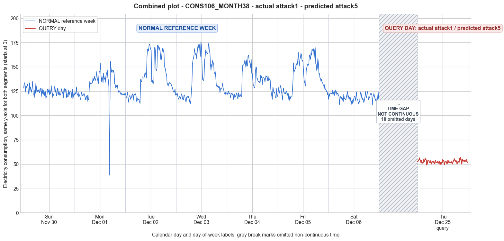

CONS106_MONTH38 · actual attack1 · predicted attack5
- Pair
- CONS106_MONTH38
- GT
- attack1
- Prediction
- attack5
- Binary GT
- attacked
- Binary Prediction
- attacked
- Source
- E010
- Parse
- stored
- Date
- 2014-12-25
- Weekday
- Thursday
- Latency
- 0.94 min
- Tokens
- 7645

Final output
Classification: - Manipulated Identified Attack: - Most Likely: Attack 5 - Confidence: High - Reasoning: The query day values are all tightly clustered around 52.6 with very low variation (std=1.56) and no resemblance to the normal Day 4 pattern (mean 133.6, std 12.8). This rules out attacks that preserve the original shape (Attack 1 constant scaling, Attack 3 variable scaling) or produce a single repeated value (Attack 9 flat average, Attack 6 cut‑off). Attack 5 generates each sample as `avg_normal_consumption × rand(0,1)`, which explains the nearly constant, low‑magnitude profile with small random fluctuations. The lack of zeros excludes Attack 2, Attack 7, and Attack IEEE. Attack 4 and Attack 12 are inconsistent because the whole day is uniformly low, not a partial reduction or another user’s pattern. Attack_Behavior_Explanation: - How consumption values are manipulated relative to the normal week: Each original 15‑minute reading is discarded and replaced by a synthetic value `μ × u_i`, where `μ` is the average daily consumption from the normal week (~133.6) and `u_i` is a fresh random number in [0,1] per interval. This produces a flat sequence of readings with small random oscillations around a fraction of the typical daily mean. - Impact on magnitude and trend: Magnitude is drastically reduced (mean dropped from ~133.6 to ~52.6, about a 60 % theft). The temporal trend is completely erased—there are no morning, midday, or evening peaks, only low‑level noise. - Possible technical causes: False data injection, where an attacker manipulates the meter’s firmware or communication to report fabricated consumption values instead of the true measurements.
Prompt
You are a domain expert in smart grid security and electricity theft analysis, with deep knowledge of non-technical loss (NTL) attack patterns in smart meters. You are given: 1. A plot of one week of original (normal) energy consumption for a smart meter, provided as context for the customer's typical consumption behavior. 2. A plot of one day of energy consumption for the same smart meter, which may or may not be manipulated. Below are common attack types, each defined by how consumption values are altered, their impact on magnitude and trend, and their possible technical causes. Attack 0: Generated by replacing all electricity consumption samples with zero values for the entire observation duration. Simulates a scenario where no energy usage is reported at all. May be caused by a total meter bypass or severe meter malfunction. Completely eliminates both the trend and magnitude of the consumption profile. Attack 1: Multiplies the actual energy consumption by a constant random value between (0,1). The lower the factor, the higher the severity. Can be triggered by meter bypass, magnetic interference, reverse current, and false data injection. The consumption trend remains the same but the magnitude is uniformly reduced. Attack 2: Generated by replacing consumption samples with zeros for a random duration. Also known as an on-off attack. Can be caused by full meter bypass, false data injection, and reverse current. Changes both the trend and amplitude. Attack 3: The actual consumption is multiplied by different random factors between 0 and 1, with a unique factor per sample. Similar to Attack 1 but the scaling factor varies per reading. Caused by meter bypass, magnetic interference, and reverse current. Changes both the trend and amplitude. Attack 4: Simulates energy theft over a randomly selected period within the observation window. All measurements in that period are reduced. Caused by meter bypass, magnetic interference, reverse current, and false data injection. Changes both the trend and amplitude. Attack 5: Each sample is replaced by a false value obtained by multiplying the average normal consumption by a random variable between 0 and 1, with a different variable per sample. Caused by false data injection. Produces a completely different pattern from the original consumption profile, changing both trend and magnitude. Attack 6: A random cut-off point is selected and all consumption values above it are replaced by that cut-off value. The attacker avoids exceeding a predefined maximum limit. Mainly caused by false data injection. Changes both the trend and amplitude. Attack 7: A random cut-off point is subtracted from each sample; if the result is negative, zero is reported. Similar to Attack 6 but replaces exceeding values with zero instead of the cut-off point. May be caused by false data injection or total meter bypass. Does not change the trend but reduces overall consumption. Attack 9: All samples are replaced by the average daily energy consumption, resulting in a flat constant profile. Easily detectable because constant consumption does not reflect normal customer behavior. Caused by false data injection. Eliminates all trends. Attack 10: Reverses the consumption pattern without reducing the total amount. Applicable when the electricity company uses time-varying pricing, allowing the attacker to shift high consumption to off-peak periods. Caused by false data injection. Changes the trend without decreasing total consumption. Attack 12: The attacker replaces their consumption pattern with that of a lower-consuming user. The legitimate user unknowingly pays the adversary's electricity bill. Caused by false data injection. Attack IEEE: For each 15-minute interval across the entire day, the consumer either reports the actual electricity consumption or substitutes it with zero. The result is a profile where some intervals reflect real consumption while others are zeroed out, creating an irregular pattern across the full day. May be caused by false data injection. Changes both the trend and amplitude. Given the two plots, determine: 1. Whether the day is attacked or original - compare the flagged day against the normal week and assess whether the consumption pattern is consistent with normal behavior or shows signs of manipulation. If the day is consistent with the customer's typical consumption behavior, classify it as original and provide no further analysis. If manipulation is detected, proceed to point 2. 2. Which attack type this most likely is - identify the single most probable attack and justify your choice based on how the flagged day deviates from the normal week. 3. The behavior of the identified attack - explain how the consumption values are manipulated, their impact on magnitude and trend, and the possible technical causes behind this type of attack. Output Format: Classification: - Original | Manipulated Identified Attack: (fill only if manipulated) - Most Likely: Attack X - Confidence: High | Medium | Low - Reasoning: Why it matches Attack X and why Attack Y and Attack Z were ruled out (list top 2 alternatives considered) Attack_Behavior_Explanation: (fill only if manipulated) - How consumption values are manipulated relative to the normal week - Impact on magnitude and trend - Possible technical causes
Reasoning content
We are asked to classify a query day (DAY_ID=4) for CONS_NO=106. We have reference week statistics and full 15-min readings for 7 days (Day 0 to Day 6), and query day readings. The query day is Day 4 of the week, but the metadata says DAY_ID=4, cal_month=12, dow=3, dom=25. The reference week includes Day 4 (the original Day 4 of that week) with min=116.07, max=161.95, std=12.77, mean=133.61. But the query day given has drastically lower values: min=49.01, max=56.92, std=1.56, mean=52.63. The query day's consumption is about 40% of the original Day 4 mean. The pattern is extremely flat (std=1.56 compared to 12.77). The reference week's days show varying patterns with typical daily peaks >150 and lows >110. Day 0, Day 6 are flatter but still have means around 119-124, with lows around 110. The query day is completely outside the range of normal. It is clearly manipulated. We need to identify the most likely attack type. Let's analyze the query day readings: all values around 49-56, very constant, with slight variation. The mean is 52.63, which is close to 0.4 times the original mean (~133.6 * 0.4 = 53.44). Not exactly constant, but very small std (1.56). Attack 9 replaces all samples by average daily energy consumption, resulting in a flat constant profile. That would give a single value repeated (or nearly repeated, but average is a single number, so all samples identical). Here we have values ranging from 49.01 to 56.92, std=1.56, so not perfectly constant. Attack 9 is ruled out because it would be exactly the mean repeated, but here we have small variations. Attack 1 multiplies by a constant random factor between 0 and 1, which would preserve the trend (shape) but reduce magnitude uniformly. But the query day pattern is drastically different from Day 4's pattern. Day 4 had a typical morning low, then a spike around midday, then higher afternoon, etc. The query day is essentially flat low values, no pattern resembling normal. So Attack 1 (constant scaling) is ruled out because the trend would be the same as original, just scaled down. Here the pattern is completely different: there's no spike, it's almost constant. That suggests the consumption is replaced by some false values, not derived from scaling the actual values. Attack 5: each sample replaced by a false value obtained by multiplying average normal consumption by a random variable between 0 and 1. That would produce a completely different pattern, with each sample being random around some proportion of the average. This could give a flat-looking profile with low variation if the average normal consumption is ~133, multiplied by random numbers ~0.4 on average would give values around 53, with some variation. This matches: the query day readings range 49-57, mean 52.63. The reference week's Day 4 mean is 133.61, average normal consumption might be that or the overall average. Attack 5 uses "average normal consumption" multiplied by random factor per sample. So it would produce a series where each value is independent random around some fraction of the average. That yields a flat, low-variance profile because each point is based on the same constant average, with only the random factor varying. This seems plausible. Attack 3 multiplies by different random factors per sample to the actual consumption. That would produce a scaled version of the original, still retaining the shape but with varying scaling per point. That would still show the shape (highs and lows) but with erratic magnitude changes. The query day shows no shape; it's essentially a constant line with noise. So Attack 3 unlikely. Attack 2 is on-off, zeroing some samples, would produce zeros intermixed with normal values; we don't see zeros. Attack 4 reduces over a period, so there would be a segment with lower values but other parts normal; query day is uniformly low all day. Attack 6 applies a cut-off, so values above a threshold become that threshold, lower values unchanged. That would still preserve part of the original shape, with a cap. Query day values all around 50-57, while original day had min 116, so the cut-off would be below 116, but then all original values would be above that cut-off, so they'd all become the cut-off value, resulting in a constant value. That could give a flat line at the cut-off. But Attack 6 says a random cut-off point is selected and all consumption values above it are replaced by that cut-off value. If the cut-off is around 50-57, then all original values (all >116) are above, so they'd all be replaced by the cut-off. But the cut-off is a single value, so all replacements would be identical, resulting in a perfectly constant line. Here we have variation, so not perfectly constant. So Attack 6 would give a single repeated value, which is not the case. Attack 7 subtracts a cut-off, with negative -> 0. That would produce some positive values and zeros; not like this. Attack 12 uses another user's pattern; unlikely as pattern is flat, not typical for any user. Attack IEEE: zeroes some intervals, producing irregular pattern with zeros; no zeros here. So Attack 5 is the most likely: each sample is replaced by a false value obtained by multiplying the average normal consumption by a random variable between 0 and 1, per sample. That explains the low variation around a fraction of the average. Let's verify: Attack 5 definition: "Each sample is replaced by a false value obtained by multiplying the average normal consumption by a random variable between 0 and 1, with a different variable per sample." So the false value = avg_normal_consumption * random(0,1). Here average normal consumption is around 133.6 (Day 4 mean) or maybe overall mean? Using Day 4 mean 133.61, random numbers around 0.4 give ~53.44. The actual query values span 49-57, consistent. The std 1.56 indicates small variation in the random factors, not completely random, but plausible. Alternatively, Attack 9 would be exactly the average repeated, but there is variation, so not that. Attack 6 would give exact cut-off repeated, but here variation rules it out. So Attack 5 fits best. Check alternatives: Attack 1 is constant scaling, would preserve shape; shape is lost. Attack 3 would retain shape but with varying scale, shape lost. So Attack 5 is the only one that generates a completely new pattern based on average. Thus, Classification: Manipulated. Identified Attack: Attack 5 with High confidence. Reasoning: The query day shows a nearly flat low consumption pattern with mean 52.63, about 40% of the normal Day 4 mean (133.61). The lack of any temporal pattern resembling the original day, and the small variation around a constant value, are characteristic of false data injection where each sample is independently generated by multiplying the average normal consumption by a random factor between 0 and 1. Attack 1 (constant scaling) would preserve the daily trend, which is absent. Attack 6 (cut-off) would produce a constant value if all readings exceed the cut-off, but the slight variation in query readings rules out a single cut-off value. Attack 9 would be exactly the average repeated with no variation. Thus Attack 5 is most consistent. Attack_Behavior_Explanation: The attacker replaced each 15-minute consumption value with a false reading computed by multiplying the average daily consumption (around 133.61) by an independent random factor between 0 and 1 per sample. This eliminates the original consumption pattern entirely, resulting in a nearly flat profile with small random fluctuations. The magnitude is significantly reduced (mean ~52.6 vs ~133.6), and the trend is completely altered (no morning/evening peaks). This attack is caused by false data injection, where malicious software injects fabricated readings into the meter.